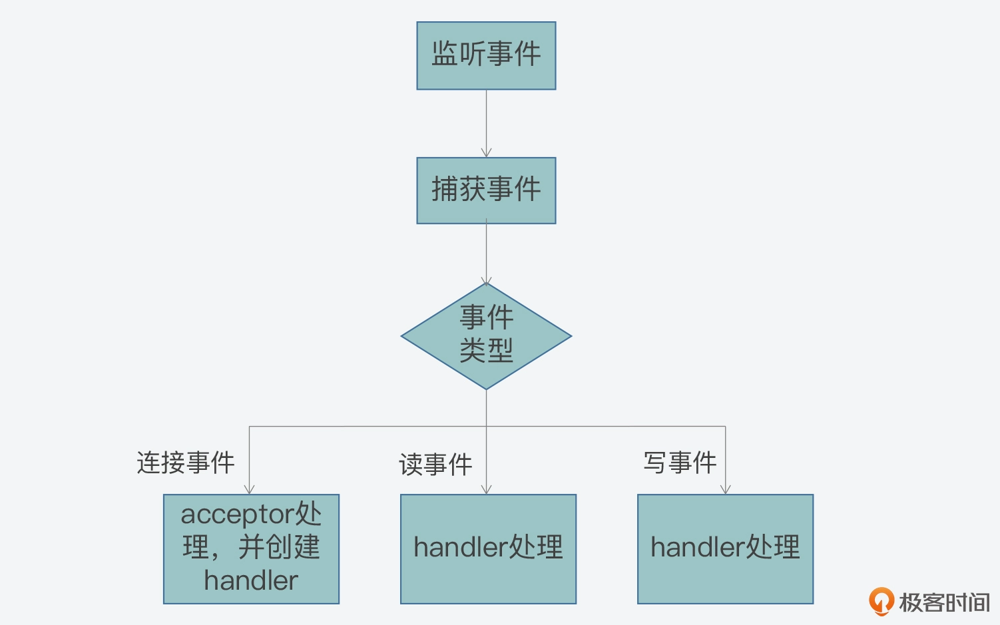
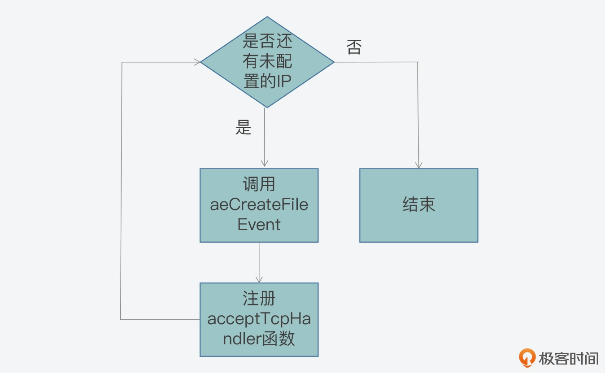

- 00 开篇词 阅读Redis源码能给你带来什么？.md
- 01 带你快速攻略Redis源码的整体架构.md
- 02 键值对中字符串的实现，用char还是结构体？.md
- 03 如何实现一个性能优异的Hash表？.md
- 04 内存友好的数据结构该如何细化设计？.md
- 05 有序集合为何能同时支持点查询和范围查询？.md
- 06 从ziplist到quicklist，再到listpack的启发.md
- 07 为什么Stream使用了Radix Tree？.md
- 08 Redis server启动后会做哪些操作？.md
- 09 Redis事件驱动框架（上）：何时使用select、poll、epoll？.md
- 10 Redis事件驱动框架（中）：Redis实现了Reactor模型吗？.md
- 11 Redis事件驱动框架（下）：Redis有哪些事件？.md
- 12 Redis真的是单线程吗？.md
- 13 Redis 6.0多IO线程的效率提高了吗？.md
- 14 从代码实现看分布式锁的原子性保证.md
- 15 为什么LRU算法原理和代码实现不一样？.md
- 16 LFU算法和其他算法相比有优势吗？.md
- 17 Lazy Free会影响缓存替换吗？.md
- 18 如何生成和解读RDB文件？.md
- 19 AOF重写（上）：触发时机与重写的影响.md
- 20 AOF重写（下）：重写时的新写操作记录在哪里？.md
- 21 主从复制：基于状态机的设计与实现.md
- 22 哨兵也和Redis实例一样初始化吗？.md
- 23 从哨兵Leader选举学习Raft协议实现（上）.md
- 24 从哨兵Leader选举学习Raft协议实现（下）.md
- 25 PubSub在主从故障切换时是如何发挥作用的？.md
- 26 从Ping-Pong消息学习Gossip协议的实现.md
- 27 从MOVED、ASK看集群节点如何处理命令？.md
- 28 Redis Cluster数据迁移会阻塞吗？.md
- 29 如何正确实现循环缓冲区？.md
- 30 如何在系统中实现延迟监控？.md
- 31 从Module的实现学习动态扩展功能.md
- 32 如何在一个系统中实现单元测试？.md
- 结束语 Redis源码阅读，让我们从新开始.md
10 Redis事件驱动框架（中）：Redis实现了Reactor模型吗？
今天，我们来聊聊 Redis 是如何实现 Reactor 模型的。
你在做 Redis 面试题的时候，或许经常会遇到这样一道经典的问题：Redis 的网络框架是实现了 Reactor 模型吗？这看起来像是一道简单的“是 / 否”问答题，但是，如果你想给出一个让面试官满意的答案，这就非常考验你的高性能网络编程基础和对 Redis 代码的掌握程度了。
如果让我来作答这道题，我会把它分成两部分来回答：一是介绍 Reactor 模型是什么，二是说明 Redis 代码实现是如何与 Reactor 模型相对应的。这样一来，就既体现了我对网络编程的理解，还能体现对 Redis 源码的深入探究，进而面试官也就会对我刮目相看了。
实际上，Reactor 模型是高性能网络系统实现高并发请求处理的一个重要技术方案。掌握 Reactor 模型的设计思想与实现方法，除了可以应对面试题，还可以指导你设计和实现自己的高并发系统。当你要处理成千上万的网络连接时，就不会一筹莫展了。
所以今天这节课，我会先带你了解下 Reactor 模型，然后一起来学习下如何实现 Reactor 模型。因为 Redis 的代码实现提供了很好的参考示例，所以我会通过 Redis 代码中的关键函数和流程，来给你展开介绍 Reactor 模型的实现。不过在学习 Reactor 模型前，你可以先回顾上节课我给你介绍的 IO 多路复用机制 epoll，因为这也是学习今天这节课的基础。
Reactor 模型的工作机制
好，首先，我们来看看什么是 Reactor 模型。
实际上，Reactor 模型就是网络服务器端用来处理高并发网络 IO 请求的一种编程模型。我把这个模型的特征用两个“三”来总结，也就是：
- 三类处理事件，即连接事件、写事件、读事件；
- 三个关键角色，即 reactor、acceptor、handler。
那么，Reactor 模型是如何基于这三类事件和三个角色来处理高并发请求的呢？下面我们就来具体了解下。
事件类型与关键角色
我们先来看看这三类事件和 Reactor 模型的关系。
其实，Reactor 模型处理的是客户端和服务器端的交互过程，而这三类事件正好对应了客户端和服务器端交互过程中，不同类请求在服务器端引发的待处理事件：
- 当一个客户端要和服务器端进行交互时，客户端会向服务器端发送连接请求，以建立连接，这就对应了服务器端的一个连接事件。
- 一旦连接建立后，客户端会给服务器端发送读请求，以便读取数据。服务器端在处理读请求时，需要向客户端写回数据，这对应了服务器端的写事件。
- 无论客户端给服务器端发送读或写请求，服务器端都需要从客户端读取请求内容，所以在这里，读或写请求的读取就对应了服务器端的读事件。
如下所示的图例中，就展示了客户端和服务器端在交互过程中，不同类请求和 Reactor 模型事件的对应关系，你可以看下。
好，在了解了 Reactor 模型的三类事件后，你现在可能还有一个疑问：这三类事件是由谁来处理的呢？
这其实就是模型中三个关键角色的作用了：
- 首先，连接事件由 acceptor 来处理，负责接收连接；acceptor 在接收连接后，会创建 handler，用于网络连接上对后续读写事件的处理；
- 其次，读写事件由 handler 处理；
- 最后，在高并发场景中，连接事件、读写事件会同时发生，所以，我们需要有一个角色专门监听和分配事件，这就是 reactor 角色。当有连接请求时，reactor 将产生的连接事件交由 acceptor 处理；当有读写请求时，reactor 将读写事件交由 handler 处理。
下图就展示了这三个角色之间的关系，以及它们和事件的关系，你可以看下。

事实上，这三个角色都是 Reactor 模型中要实现的功能的抽象。当我们遵循 Reactor 模型开发服务器端的网络框架时，就需要在编程的时候，在代码功能模块中实现 reactor、acceptor 和 handler 的逻辑。
那么，现在我们已经知道，这三个角色是围绕事件的监听、转发和处理来进行交互的，那么在编程时，我们又该如何实现这三者的交互呢？这就离不开事件驱动框架了。
事件驱动框架
所谓的事件驱动框架，就是在实现 Reactor 模型时，需要实现的代码整体控制逻辑。简单来说，事件驱动框架包括了两部分：一是事件初始化；二是事件捕获、分发和处理主循环。
事件初始化是在服务器程序启动时就执行的，它的作用主要是创建需要监听的事件类型，以及该类事件对应的 handler。而一旦服务器完成初始化后，事件初始化也就相应完成了，服务器程序就需要进入到事件捕获、分发和处理的主循环中。
在开发代码时，我们通常会用一个 while 循环来作为这个主循环。然后在这个主循环中，我们需要捕获发生的事件、判断事件类型，并根据事件类型，调用在初始化时创建好的事件 handler 来实际处理事件。
比如说，当有连接事件发生时，服务器程序需要调用 acceptor 处理函数，创建和客户端的连接。而当有读事件发生时，就表明有读或写请求发送到了服务器端，服务器程序就要调用具体的请求处理函数，从客户端连接中读取请求内容，进而就完成了读事件的处理。这里你可以参考下面给出的图例，其中显示了事件驱动框架的基本执行过程：

那么到这里，你应该就已经了解了 Reactor 模型的基本工作机制：客户端的不同类请求会在服务器端触发连接、读、写三类事件，这三类事件的监听、分发和处理又是由 reactor、acceptor、handler 三类角色来完成的，然后这三类角色会通过事件驱动框架来实现交互和事件处理。
所以可见，实现一个 Reactor 模型的关键，就是要实现事件驱动框架。那么，如何开发实现一个事件驱动框架呢？
Redis 提供了一个简洁但有效的参考实现，非常值得我们学习，而且也可以用于自己的网络系统开发。下面，我们就一起来学习下 Redis 中对 Reactor 模型的实现。
Redis 对 Reactor 模型的实现
首先我们要知道的是，Redis 的网络框架实现了 Reactor 模型，并且自行开发实现了一个事件驱动框架。这个框架对应的 Redis 代码实现文件是ae.c，对应的头文件是ae.h。
前面我们已经知道，事件驱动框架的实现离不开事件的定义，以及事件注册、捕获、分发和处理等一系列操作。当然，对于整个框架来说，还需要能一直运行，持续地响应发生的事件。
那么由此，我们从 ae.h 头文件中就可以看到，Redis 为了实现事件驱动框架，相应地定义了事件的数据结构、框架主循环函数、事件捕获分发函数、事件和 handler 注册函数。所以接下来，我们就依次来了解学习下。
事件的数据结构定义：以 aeFileEvent 为例
首先，我们要明确一点，就是在 Redis 事件驱动框架的实现当中，事件的数据结构是关联事件类型和事件处理函数的关键要素。而 Redis 的事件驱动框架定义了两类事件：IO 事件和时间事件，分别对应了客户端发送的网络请求和 Redis 自身的周期性操作。
这也就是说，不同类型事件的数据结构定义是不一样的。不过，由于这节课我们主要关注的是事件框架的整体设计与实现，所以对于不同类型事件的差异和具体处理，我会在下节课给你详细介绍。那么在今天的课程中，为了让你能够理解事件数据结构对框架的作用，我就以 IO 事件 aeFileEvent 为例，给你介绍下它的数据结构定义。
aeFileEvent 是一个结构体，它定义了 4 个成员变量 mask、rfileProce、wfileProce 和 clientData，如下所示：
typedef struct aeFileEvent {
int mask; /* one of AE_(READABLE|WRITABLE|BARRIER) */
aeFileProc *rfileProc;
aeFileProc *wfileProc;
void *clientData;
} aeFileEvent;
- mask 是用来表示事件类型的掩码。对于网络通信的事件来说，主要有 AE_READABLE、AE_WRITABLE 和 AE_BARRIER 三种类型事件。框架在分发事件时，依赖的就是结构体中的事件类型；
- rfileProc 和 wfileProce 分别是指向 AE_READABLE 和 AE_WRITABLE 这两类事件的处理函数，也就是 Reactor 模型中的 handler。框架在分发事件后，就需要调用结构体中定义的函数进行事件处理；
- 最后一个成员变量 clientData 是用来指向客户端私有数据的指针。
除了事件的数据结构以外，前面我还提到 Redis 在 ae.h 文件中，定义了支撑框架运行的主要函数，包括框架主循环的 aeMain 函数、负责事件捕获与分发的 aeProcessEvents 函数，以及负责事件和 handler 注册的 aeCreateFileEvent 函数，它们的原型定义如下：
void aeMain(aeEventLoop *eventLoop);
int aeCreateFileEvent(aeEventLoop *eventLoop, int fd, int mask, aeFileProc *proc, void *clientData);
int aeProcessEvents(aeEventLoop *eventLoop, int flags);
而这三个函数的实现，都是在对应的 ae.c 文件中，那么接下来，我就给你具体介绍下这三个函数的主体逻辑和关键流程。
主循环：aeMain 函数
我们先来看下 aeMain 函数。
aeMain 函数的逻辑很简单，就是用一个循环不停地判断事件循环的停止标记。如果事件循环的停止标记被设置为 true，那么针对事件捕获、分发和处理的整个主循环就停止了；否则，主循环会一直执行。aeMain 函数的主体代码如下所示：
void aeMain(aeEventLoop *eventLoop) {
eventLoop->stop = 0;
while (!eventLoop->stop) {
…
aeProcessEvents(eventLoop, AE_ALL_EVENTS|AE_CALL_AFTER_SLEEP);
}
}
那么这里你可能要问了，aeMain 函数是在哪里被调用的呢？
按照事件驱动框架的编程规范来说，框架主循环是在服务器程序初始化完成后，就会开始执行。因此，如果我们把目光转向 Redis 服务器初始化的函数，就会发现服务器程序的 main 函数在完成 Redis server 的初始化后，会调用 aeMain 函数开始执行事件驱动框架。如果你想具体查看 main 函数，main 函数在server.c文件中，我们在【第 8 讲】中介绍过该文件，server.c 主要用于初始化服务器和执行服务器整体控制流程，你可以回顾下。
不过，既然 aeMain 函数包含了事件框架的主循环，**那么在主循环中，事件又是如何被捕获、分发和处理呢？**这就是由 aeProcessEvents 函数来完成的了。
事件捕获与分发：aeProcessEvents 函数
aeProcessEvents 函数实现的主要功能，包括捕获事件、判断事件类型和调用具体的事件处理函数，从而实现事件的处理。
从 aeProcessEvents 函数的主体结构中，我们可以看到主要有三个 if 条件分支，如下所示：
int aeProcessEvents(aeEventLoop *eventLoop, int flags)
{
int processed = 0, numevents;
/* 若没有事件处理，则立刻返回*/
if (!(flags & AE_TIME_EVENTS) && !(flags & AE_FILE_EVENTS)) return 0;
/*如果有IO事件发生，或者紧急的时间事件发生，则开始处理*/
if (eventLoop->maxfd != -1 || ((flags & AE_TIME_EVENTS) && !(flags & AE_DONT_WAIT))) {
…
}
/* 检查是否有时间事件，若有，则调用processTimeEvents函数处理 */
if (flags & AE_TIME_EVENTS)
processed += processTimeEvents(eventLoop);
/* 返回已经处理的文件或时间*/
return processed;
}
这三个分支分别对应了以下三种情况：
- 情况一：既没有时间事件，也没有网络事件；
- 情况二：有 IO 事件或者有需要紧急处理的时间事件；
- 情况三：只有普通的时间事件。
那么对于第一种情况来说，因为没有任何事件需要处理，aeProcessEvents 函数就会直接返回到 aeMain 的主循环，开始下一轮的循环；而对于第三种情况来说，该情况发生时只有普通时间事件发生，所以 aeMain 函数会调用专门处理时间事件的函数 processTimeEvents，对时间事件进行处理。
现在，我们再来看看第二种情况。
首先，当该情况发生时，Redis 需要捕获发生的网络事件，并进行相应的处理。那么从 Redis 源码中我们可以分析得到，在这种情况下，aeApiPoll 函数会被调用，用来捕获事件，如下所示：
int aeProcessEvents(aeEventLoop *eventLoop, int flags){
...
if (eventLoop->maxfd != -1 || ((flags & AE_TIME_EVENTS) && !(flags & AE_DONT_WAIT))) {
...
//调用aeApiPoll函数捕获事件
numevents = aeApiPoll(eventLoop, tvp);
...
}
...
}
那么，aeApiPoll 是如何捕获事件呢？
实际上，Redis 是依赖于操作系统底层提供的 IO 多路复用机制，来实现事件捕获，检查是否有新的连接、读写事件发生。为了适配不同的操作系统，Redis 对不同操作系统实现的网络 IO 多路复用函数，都进行了统一的封装，封装后的代码分别通过以下四个文件中实现：
- ae_epoll.c，对应 Linux 上的 IO 复用函数 epoll；
- ae_evport.c，对应 Solaris 上的 IO 复用函数 evport；
- ae_kqueue.c，对应 macOS 或 FreeBSD 上的 IO 复用函数 kqueue；
- ae_select.c，对应 Linux（或 Windows）的 IO 复用函数 select。
这样，在有了这些封装代码后，Redis 在不同的操作系统上调用 IO 多路复用 API 时，就可以通过统一的接口来进行调用了。
不过看到这里，你可能还是不太明白 Redis 封装的具体操作，所以这里，我就以在服务器端最常用的 Linux 操作系统为例，给你介绍下 Redis 是如何封装 Linux 上提供的 IO 复用 API 的。
首先，Linux 上提供了 epoll_wait API，用于检测内核中发生的网络 IO 事件。在ae_epoll.c文件中，aeApiPoll 函数就是封装了对 epoll_wait 的调用。
这个封装程序如下所示，其中你可以看到，在 aeApiPoll 函数中直接调用了 epoll_wait 函数，并将 epoll 返回的事件信息保存起来的逻辑：
static int aeApiPoll(aeEventLoop *eventLoop, struct timeval *tvp) {
…
//调用epoll_wait获取监听到的事件
retval = epoll_wait(state->epfd,state->events,eventLoop->setsize,
tvp ? (tvp->tv_sec*1000 + tvp->tv_usec/1000) : -1);
if (retval > 0) {
int j;
//获得监听到的事件数量
numevents = retval;
//针对每一个事件，进行处理
for (j = 0; j < numevents; j++) {
#保存事件信息
}
}
return numevents;
}
为了让你更加清晰地理解，事件驱动框架是如何实现最终对 epoll_wait 的调用，这里我也放了一张示意图，你可以看看整个调用链是如何工作和实现的。

OK，现在我们就已经在 aeMain 函数中，看到了 aeProcessEvents 函数被调用，并用于捕获和分发事件的基本处理逻辑。
**那么，事件具体是由哪个函数来处理的呢？**这就和框架中的 aeCreateFileEvents 函数有关了。
事件注册：aeCreateFileEvent 函数
我们知道，当 Redis 启动后，服务器程序的 main 函数会调用 initSever 函数来进行初始化，而在初始化的过程中，aeCreateFileEvent 就会被 initServer 函数调用，用于注册要监听的事件，以及相应的事件处理函数。
具体来说，在 initServer 函数的执行过程中，initServer 函数会根据启用的 IP 端口个数，为每个 IP 端口上的网络事件，调用 aeCreateFileEvent，创建对 AE_READABLE 事件的监听，并且注册 AE_READABLE 事件的处理 handler，也就是 acceptTcpHandler 函数。这一过程如下图所示：

所以这里我们可以看到，AE_READABLE 事件就是客户端的网络连接事件，而对应的处理函数就是接收 TCP 连接请求。下面的示例代码中，显示了 initServer 中调用 aeCreateFileEvent 的部分片段，你可以看下：
void initServer(void) {
…
for (j = 0; j < server.ipfd_count; j++) {
if (aeCreateFileEvent(server.el, server.ipfd[j], AE_READABLE,
acceptTcpHandler,NULL) == AE_ERR)
{
serverPanic("Unrecoverable error creating server.ipfd file event.");
}
}
…
}
**那么，aeCreateFileEvent 如何实现事件和处理函数的注册呢？**这就和刚才我介绍的 Redis 对底层 IO 多路复用函数封装有关了，下面我仍然以 Linux 系统为例，来给你说明一下。
首先，Linux 提供了 epoll_ctl API，用于增加新的观察事件。而 Redis 在此基础上，封装了 aeApiAddEvent 函数，对 epoll_ctl 进行调用。
所以这样一来，aeCreateFileEvent 就会调用 aeApiAddEvent，然后 aeApiAddEvent 再通过调用 epoll_ctl，来注册希望监听的事件和相应的处理函数。等到 aeProceeEvents 函数捕获到实际事件时，它就会调用注册的函数对事件进行处理了。
好了，到这里，我们就已经全部了解了 Redis 中实现事件驱动框架的三个关键函数：aeMain、aeProcessEvents，以及 aeCreateFileEvent。当你要去实现一个事件驱动框架时，Redis 的设计思想就具有很好的参考意义。
最后我再带你来简单地回顾下，在实现事件驱动框架的时候，你需要先实现一个主循环函数（对应 aeMain），负责一直运行框架。其次，你需要编写事件注册函数（对应 aeCreateFileEvent），用来注册监听的事件和事件对应的处理函数。只有对事件和处理函数进行了注册，才能在事件发生时调用相应的函数进行处理。
最后，你需要编写事件监听、分发函数（对应 aeProcessEvents），负责调用操作系统底层函数来捕获网络连接、读、写事件，并分发给不同处理函数进一步处理。
小结
Redis 一直被称为单线程架构，按照我们通常的理解，单个线程只能处理单个客户端的请求，但是在实际使用时，我们会看到 Redis 能同时和成百上千个客户端进行交互，这就是因为 Redis 基于 Reactor 模型，实现了高性能的网络框架，通过事件驱动框架，Redis 可以使用一个循环来不断捕获、分发和处理客户端产生的网络连接、数据读写事件。
为了方便你从代码层面掌握 Redis 事件驱动框架的实现，我总结了一个表格，其中列出了 Redis 事件驱动框架的主要函数和功能、它们所属的 C 文件，以及这些函数本身是在 Redis 代码结构中的哪里被调用。你可以使用这张表格，来巩固今天这节课学习的事件驱动框架。

最后，我也再强调下，这节课我们主要关注的是，事件驱动框架的基本运行流程，并以客户端连接事件为例，将框架主循环、事件捕获分发和事件注册的关键步骤串起来，给你做了介绍。Redis 事件驱动框架监听处理的事件，还包括客户端请求、服务器端写数据以及周期性操作等，这也是我下一节课要和你一起学习的主要内容。
每课一问
这节课我们学习了 Reactor 模型，除了 Redis，你还了解什么软件系统使用了 Reactor 模型吗？
© 2019 - 2023 Liangliang Lee. Powered by Vert.x and hexo-theme-book.